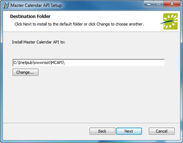
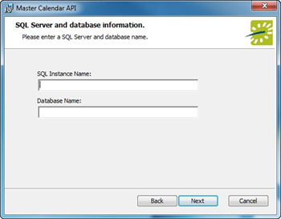
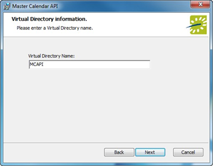

Once you meet the prerequisites, download the installation files, run the Master Calendar Installer, and install/upgrade the Database Component, you will need to do the following:

The Master Calendar API Web Service should not be installed in the same physical directory as other EMS web-based products OR under a site running another version of Master Calendar or the Master Calendar API.


The Master Calendar API Web Service should not be installed in the same virtual directory as other EMS web-based products OR under a site running another version of Master Calendar or the Master Calendar API.